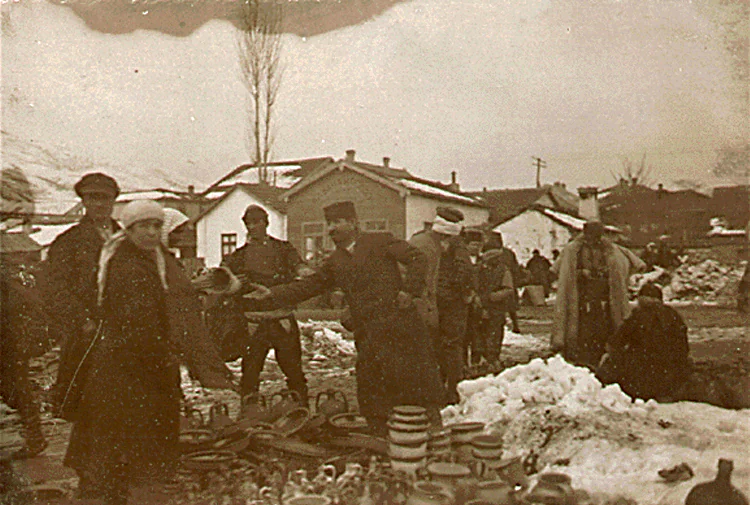

Shkupi 1916 - 1917 panorama 1
Dokumente nga Luftërat Ballkanike
- Viti
- 1916-1917
- Kohëzgjatja
- 00:11

Karrocierë në tregun e Shkupit nën kalanë e qytetit, përballë postës turke. Prapa djathtas duken Xhamia e Mustafa Pashës dhe posta. (shekulli XIX)

Treg në Shkup në hapësirën para Hyqymetit (komunës) dhe postës turke - 1902. Në sfond majtas është kazerma. (fundi i shekullit XIX)
Ditë pazari në Shkup para Hyqymetit (komunës) dhe postës turke, 1902. Prapa është Xhamia e Mustafa Pashës.

Tregu i Shkupit nën kalanë e qytetit - shekulli XIX.

Tregu i Shkupit nën kalanë e qytetit - shekulli XIX.

Karrocierë në sheshin e qytetit - shekulli XIX.

Treg në Shkup në hapësirën para Hyqymetit (komunës) dhe postës turke - 1902. Në sfond duket kazerma.

Pazari i Vjetër, treg i produkteve bujqësore. Në sfond Xhamia e Isak Beut dhe tyrbja. (fundi i shekullit XIX, fillimi i shekullit XX)

Pazari i Vjetër, fundi i shekullit XIX.

Treg në çarshinë e vjetër - fundi i shekullit XIX.

Pazari i Vjetër. Në sfond Xhamia e Isak Beut dhe tyrbja.
- shekulli XIX.

Pazari i Vjetër. Në sfond Xhamia e Isak Beut dhe tyrbja.
- shekulli XIX.

Pjesë e Pazarit të Vjetër - tregu i poçarisë.
(fillimi i shekullit XX)

Qytetarë dhe fshatarë në Pazarin e Vjetër - një moment nga ditët e pazarit (fillimi i shekullit XX)

Shitës patatesh - një moment nga ditët e pazarit
(rreth vitit 1930)

Pazari i Vjetër - vitet 1920.

Pazari i Vjetër - vitet 1950.

Pazari i Vjetër - vitet 1950.

Dokumente nga Luftërat Ballkanike
 Ujësjellësi4 kartolina
Ujësjellësi4 kartolina Kalaja30 kartolina
Kalaja30 kartolina Urat60 kartolina
Urat60 kartolina Kej58 kartolina
Kej58 kartolina Sheshi46 kartolina
Sheshi46 kartolina Ndërtesat66 kartolina
Ndërtesat66 kartolina Kishat e krishtera19 kartolina
Kishat e krishtera19 kartolina Objektet myslimane33 kartolina
Objektet myslimane33 kartolina Shtëpia e Oficerëve29 kartolina
Shtëpia e Oficerëve29 kartolina Teatri28 kartolina
Teatri28 kartolina Stacioni hekurudhor13 kartolina
Stacioni hekurudhor13 kartolina Shkollat36 kartolina
Shkollat36 kartolina Parqet12 kartolina
Parqet12 kartolina Tregjet18 kartolina
Tregjet18 kartolina Rrugët38 kartolina
Rrugët38 kartolina Panorama I60 kartolina
Panorama I60 kartolina Panorama II30 kartolina
Panorama II30 kartolina Kolazhe55 kartolina
Kolazhe55 kartolina Përmbytjet9 kartolina
Përmbytjet9 kartolina Tërmeti27 kartolina
Tërmeti27 kartolina Shkupi 200026 kartolina
Shkupi 200026 kartolina